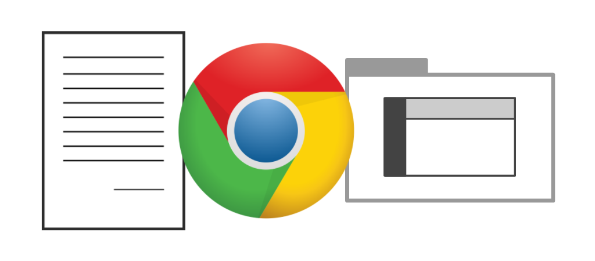
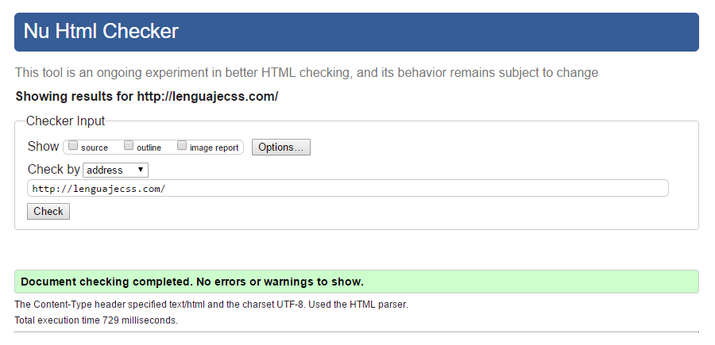
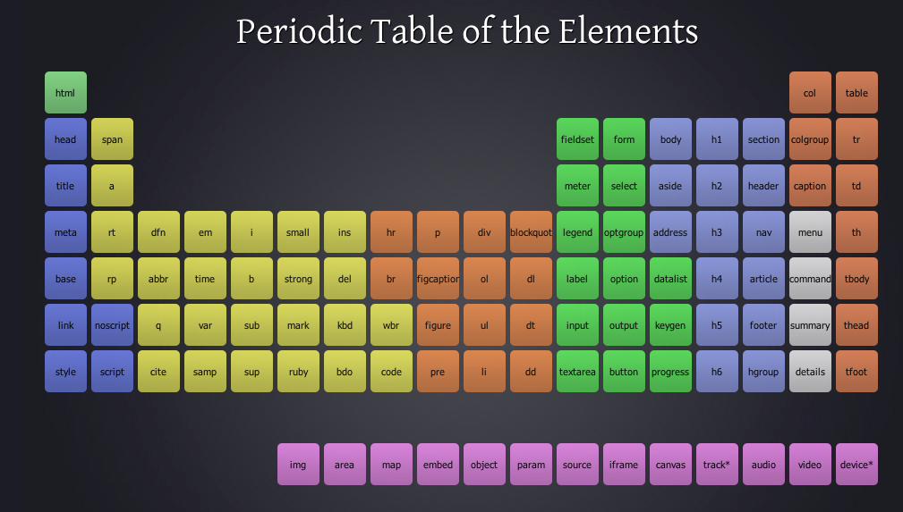

Introducción a HTML5¶

Que es HTML¶
Cuando accedemos a una página web, debemos tener en cuenta que lo que realmente está ocurriendo es que nuestro navegador web está pidiendo un documento de texto al sistema (máquina) donde está almacenada esa página web.
En cualquier navegador, existe una opción para ver el código fuente de la página web, la cuál nos mostrará exactamente el texto de dicho documento. El navegador normalmente no nos muestra esa información literalmente, sino que la interpreta y va dibujando los elementos de una página web.
El documento que lee el navegador está escrito en un lenguaje de marcado llamado HTML, que son las siglas de HyperText Markup Language (Lenguaje de marcas de hipertexto), o lo que es lo mismo, un lenguaje de etiquetas que permite incluir o hacer referencia a todo tipo de información.

¿Qué es una etiqueta HTML?¶
En el navegador Chrome, puedes pulsar la combinación de teclas CTRL+U para ver el código fuente de la página en la que te encuentras. Dicho documento esta formado por etiquetas, que son la base del lenguaje HTML.
Existen muchas etiquetas y cada una se utiliza para contener información y darle un cierto significado a dicha información, dependiendo de la etiqueta que se trate. Las etiquetas HTML tienen la siguiente estructura:
<etiqueta>contenido</etiqueta>
En HTML no se puede utilizar cualquier palabra como etiqueta (en el ejemplo anterior, es incorrecto utilizar la etiqueta «etiqueta»). En su lugar, existen una serie de etiquetas concretas, cada una de ellas con su finalidad y características propias, que tendremos que utilizar según requiera la ocasión. Por norma general, las etiquetas deben cerrarse para indicar donde finaliza su contenido.
A continuación, utilicemos la etiqueta <strong> (etiqueta utilizada para darle importancia a una palabra sobre el resto) en el siguiente ejemplo:
<p>Dentro de este texto, esta <strong>palabra</strong> es más importante que el resto.</p>
Obsérvese que en el ejemplo estamos utilizando dos etiquetas diferentes. La etiqueta <p>, que contiene toda la frase, y la etiqueta <strong>, que contiene sólo la palabra palabra. La primera etiqueta, <p>, se utiliza para contener párrafos, mientras que la segunda etiqueta, <strong>, indica la palabra que tiene mayor importancia del texto.
También se habrá observado que se pueden anidar etiquetas, esto es, incluir etiquetas dentro de otras. Es algo que se hace continuamente en HTML y que a medida que avancemos se tornará habitual.
¿Qué es la semántica?¶
Uno de los principales objetivos de HTML5 es introducir información en un documento HTML5 de forma que sea semántico y no visual. Con esto queremos decir que todos los aspectos visuales deben dejarse para el apartado de presentación, que se gestiona desde el lenguaje CSS. En el documento HTML debe aparecer información correctamente individualizada, de modo que al leer una página HTML comprendamos su significado, y si queremos cambiar la apariencia, lo hagamos en el documento CSS. Esto es lo que comunmente se conoce como separación de la presentación del contenido.
Un ejemplo donde se ve claramente esto es con la etiqueta <b> de HTML4 y anteriores. Dicha etiqueta se utilizaba para poner en negrita (bold) un texto específico:
Hola, quiero resaltar esta <b>palabra</b>.
En este caso, se está utilizando una propiedad de presentación (visual) en el HTML, algo que no se debe hacer en HTML5. La misión de HTML5 es mantener sólo contenido e información semántica en HTML5. Por ello, la forma de hacerlo en HTML5 es la siguiente:
Hola, quiero resaltar esta <strong>palabra</strong>.
En este nuevo ejemplo, se reemplaza la etiqueta <b> (negrita, característica de presentación) por <strong>, una etiqueta que indica información semántica (importante, característica semántica). De esta forma, en el HTML5 sólo se está añadiendo información particular sobre fragmentos de texto, y si queremos dotar de presentación visual, lo haremos desde CSS:
strong {
font-weight: bold;
color: black;
}
De esta forma podríamos cambiar el estilo (negrita, colores, tipo de letra, etc...) independientemente de la información y contenido que existe en el HTML. Incluso podríamos establecer el mismo estilo que en el texto, para que visualmente se vea todo de forma uniforme, pero sin embargo, al leer la página HTML, el navegador sabrá siempre que fragmentos de texto son más importantes, aunque tenga el mismo estilo visual.
El objetivo de crear documentos HTML semánticos es que, aunque estamos acostumbrados a crear páginas para usuarios (o más concretamente, para navegadores), cada vez tendemos más a una Internet capaz de procesar información de forma autónoma. Muestra de ello son, por ejemplo, los robots o crawlers de buscadores como Googlebot (el robot de búsqueda de Google) que es capaz de acceder a páginas web para analizar la información de la misma, entenderla e indexarla en su buscador.
Estructura de etiqueta HTML¶
Como habíamos mencionado, las páginas webs son realmente documentos de texto que contienen información y muchas etiquetas HTML que indican que tipo de contenido se va a mostrar en el navegador al cargar la página web.
La estructura de las etiquetas HTML tiene el siguiente formato:
Etiqueta HTML¶
La parte esencial de una etiqueta HTML es lo que se denomina la etiqueta de apertura. Se trata de escribir el nombre de la etiqueta en cuestión, colocándola entre los carácteres < y >. Aunque no es terminantemente obligatorio, se recomienda y considera una buena costumbre escribir las etiquetas siempre en minúsculas.
En HTML5 no se puede colocar cualquier palabra como etiqueta, sino que existen una serie específica de etiquetas, cada una con una misión y objetivo diferente. Por ejemplo, la etiqueta <strong>:
<strong>Contenido</strong>
Como se puede ver, la mayoría de las etiquetas requieren que se especifique un cierre de etiqueta para saber donde termina de actuar. Se caracteriza en que se escribe igual que la etiqueta de apertura, pero con la barra / inmediatamente después del <.
Atributo¶
En algunas etiquetas HTML, existen algunos atributos específicos (que pueden ser opcionales u obligatorios). Los atributos determinan cierta información sobre la etiqueta (o su modo de actuar) y generalmente van asociados a un valor determinado. Este par atributo-valor se escribe después del nombre de la etiqueta, separándola por espacio y antes del carácter > de la etiqueta de apertura:
<strong id="dato">Contenido</strong>
En este caso, la etiqueta sería strong, el atributo id, el valor de id sería dato, mientras que el contenido de la etiqueta es Contenido. Por otro lado, y al igual que las etiquetas, cada atributo tiene una misión y comportamiento concreto. Aunque los valores pueden ir rodeados por comillas simples, se recomienda escribir el valor siempre entre comillas dobles.
Existen 3 tipos de atributos dependiendo de sus valores:
- Conjunto finito de valores: Son los atributos en los que puedes especificarle una serie de valores limitada. Cualquier otro valor que no sea uno de ellos, no será válido.
- Valores libres: Son los atributos en los que puedes especificar un valor libremente, como una dirección URL o un texto, y no existe una serie de valores específicos para escribir.
- Valores booleanos: Son los atributos que deben tener un valor verdadero (true) o un valor falso (false). En HTML5 estos atributos se escriben sin valor (solo el atributo) si son verdaderos y se omiten para indicar que son falsos.
Contenido de la etiqueta¶
En el interior de la etiqueta HTML (después de la etiqueta de apertura y antes de la etiqueta de cierre) se debe colocar la información que queremos que sea afectada por dicha etiqueta. En el siguiente ejemplo se ve como contiene un fragmento de texto:
<strong id="dato" class="clase1" lang="es">Contenido de texto</strong>
Ten en cuenta que una etiqueta puede tener varios pares atributo-valor, como se ve en el ejemplo anterior, pero nunca se debe repetir el mismo atributo en una misma etiqueta varias veces, ya que sobreescribiría al anterior. El orden de los atributos no importa. Más adelante explicaremos que tipos de atributos existen y para que sirven.
Sin embargo, una etiqueta puede contener desde un fragmento de texto hasta un grupo de etiquetas. Esto depende mucho de la etiqueta a utilizar, y se verá más adelante en el apartado de etiquetas. Un posible ejemplo sería el siguiente:
<div id="pagina">
<strong>Contenido importante</strong>
</div>
Nótese que dentro de la etiqueta <div> vemos que no sólo hay un fragmento de texto, sino que además incluye otra etiqueta, <strong> en este caso. Esto ocurre en las etiquetas de agrupación, que veremos más adelante.
Comentario HTML¶
Los comentarios son una práctica muy común y habitual en los desarrolladores o programadores. Se basa en introducir breves fragmentos de texto que el navegador ignora y no tendrá en cuenta a la hora de crear la página visualmente, pero que a nosotros nos sirven de ayuda para documentar algún detalle, explicar algo importante o simplemente introducir algún texto que consideramos relevante:
<!-- Esto es un comentario de ejemplo que el navegador ignorará -->
Como se puede ver, para introducir estos comentarios en el código HTML, basta con escribir los fragmentos de texto <!-- y --> entre el comentario en cuestión que queramos incluir.
Atributos comunes en HTML¶
Como hemos visto, el HTML está formado por etiquetas. Muchas etiquetas. Cada etiqueta tiene una misión y tarea y contendrá cierto contenido relacionado con su misión. Y además tenemos los atributos, que son palabras clave de texto que modifican ligeramente el comportamiento de la etiqueta que lo contiene.
En este apartado vamos a ver una lista de atributos comunes que pueden ser utilizados en cualquier etiqueta HTML:
| Atributo | Valor | Descripción |
|---|---|---|
id |
nombre | Establece un identificador a la etiqueta HTML (sólo una por página con ese nombre). |
class |
nombre | Establece una clase (género) a una etiqueta HTML. Puede repetirse por página. |
lang |
idioma | Indica el idioma del contenido de la etiqueta HTML. |
translate |
yes | no |
Indica si el contenido de la etiqueta es traducible o no. |
title |
título | Mensaje mostrado en un tooltip (aviso amarillo emergente) al mover el ratón encima. |
data-* |
nombre | Metadatos en la propia etiqueta. Se puede usar cualquier nombre con prefijo data-. |
accesskey |
atajo | Combinación de teclas que puede pulsar el usuario para activar el elemento. |
dir |
ltr | rtl |
Establece la direccionalidad del texto (left to right o right to left). |
style |
estilos | Aplica propiedades CSS directamente al elemento en cuestión. |
Esta sección no es absolutamente necesaria para usuarios iniciados, y quizás requiera adquirir más práctica con HTML antes de comenzar a leer esta parte.
Identificador de etiqueta (id)¶
En HTML, podemos darle un identificador a una etiqueta HTML y de esta forma darle un nombre. Simplemente, añadimos el atributo id y colocamos el nombre como valor de ese atributo. Ese nombre de identificador no debe empezar nunca por un número y puede contener letras mayúsculas, minúsculas, signos especiales (guión, guión bajo...) o números:
<div id="pagina">
<div>Aquí irá un anuncio</div>
<div id="articulo">Aquí irá el contenido de texto del artículo</div>
<div>Aquí irá un anuncio</div>
</div>
Los id se suelen indicar cuando queremos localizar zonas específicas que sabemos que no se van a repetir en esa misma página.
Uno de los detalles importantes de los id, es que no pueden haber dos con el mismo nombre en una página. Ejemplos correctos de id serían «pagina» (para contener toda la página completa), «comentarios» (para contener toda la zona de comentarios de la página) o «header» (para contener la parte con el logo y la cabecera de la página). Lo que debe quedar claro de los ids, es que no se puede tener el mismo id en varias etiquetas HTML en una misma página.
Más adelante, en el apartado de enlaces o hipervínculos, veremos que también podemos utilizarlos para acceder rápidamente, desde un enlace, a esa sección concreta de la página.
Clases de etiquetas (class)¶
Las clases funcionan de una forma muy similar a los id, pero son mucho más flexibles. En primer lugar, no tienen la limitación de los ids, por lo que su nombre se puede repetir y no es necesario que aparezca sólo una vez por página.
De hecho, la idea de las clases es establecer géneros o tipos de etiquetas, a los que les asociemos características comunes. Sigamos con el ejemplo anterior:
<div id="pagina">
<div class="anuncio">Aquí irá un anuncio</div>
<div id="articulo">Aquí irá el contenido de texto del artículo</div>
<div class="anuncio">Aquí irá un anuncio</div>
</div>
Obsérvese que, al tener la misma clase «anuncio», podemos realizar acciones para todas las etiquetas de ese tipo y no tener que hacerlo para cada una de ellas por separado. Un ejemplo clásico donde se ve bien su utilidad, es respecto a utilizar ids y clases para dar estilo CSS, donde aplicaremos unos estilos concretos a todas las etiquetas HTML con clase «anuncio».
Además, una etiqueta puede tener múltiples clases diferentes, no una sola. Esto nos da más flexibilidad a la hora de crear clases específicas:
<div id="pagina">
<div class="anuncio primero">Aquí irá un anuncio</div>
<div id="articulo">Aquí irá el contenido de texto del artículo</div>
<div class="anuncio ultimo">Aquí irá un anuncio</div>
</div>
Nótese que en la primera etiqueta del anuncio hemos aplicado las clases anuncio y primero, mientras que en el último anuncio hemos aplicado las clases anuncio y último. Esto nos permitiría asignar atributos comunes al anuncio en la clase anuncio, y atributos que sólo dependan de la posición donde esta colocado en primero y/o ultimo.
Recordar siempre que para indicar múltiples clases se debe separar las clases por espacio dentro de un mismoa atributo class. No se debe nunca indicar varios atributos class en una misma etiqueta, ya que el navegador lo que haría es sobreescribir el valor del último class con los de los primeros.
Idioma del contenido¶
Mediante el atributo lang podemos indicar el idioma del contenido de la etiqueta. El valor de dicho atributo tendrá que ser el código ISO 639-1 del idioma al que queremos hacer referencia. También podemos utilizar el atributo translate para indicar si el contenido de un texto es o no traducible:
<p>
Hace algunos días fuí a ver la nueva película de <span translate="no">StarWars</span>.
</p>
De esta forma, le indicamos al navegador o a herramientas como Google Translator, que esa frase específica no se debe traducir porque es el título que queremos que aparezca siempre. Por defecto, si no se indica el atributo translate en una etiqueta, es como si tuviera el valor yes por defecto.
Títulos o tooltips¶
En la mayoría de las etiquetas HTML podemos indicar el atributo title para especificar un mensaje de texto que aparezca cuando el usuario detenga el ratón sobre el elemento un instante. Al usuario le aparece un pequeño aviso emergente, generalmente con fondo amarillo y letras negras, que muestra el texto en cuestión:
<div>
<img src="Gandalf.jpg"
alt="Gandalf el gris, utilizando un portátil para consultar su correo."
title="¡Este es Gandalf el gris!" />
</div>
Es importante no confundir el atributo title con el atributo alt de las imágenes, que generalmente se confunden porque pueden tener objetivos idénticos, pero no siempre es así. El atributo alt debe ser un texto alternativo que describa la imagen en el caso de que no se pueda ver visualmente, mientras que el atributo title puede describir la imagen, pero no tiene porque ser una descripción alternativa.
De la misma forma, podemos utilizar el atributo title para otros elementos, como por ejemplo, etiquetas <a> (enlaces) u otras.
Metadatos (datasets)¶
En HTML, veremos que la mayoría de los metadatos (información adicional) se incluyen en la etiqueta <head> del documento HTML. Sin embargo, también se puede incluir metadatos en la propia etiqueta HTML a través de un atributo con prefijo data-.
De esta forma, podemos inventarnos cualquier atributo que contenga información, habitualmente orientada a utilizarse desde Javascript:
<div id="compartir">
<a href="https://twitter.com/share/?url=https://lenguajehtml.com/"
data-share="43">Twitter</a>
<a href="https://www.facebook.com/sharer/sharer.php?u=https://lenguajehtml.com/"
data-share="66">Facebook</a>
<a href="https://plus.google.com/share?url=https://lenguajehtml.com/"
data-share="38">Google+</a>
</div>
En este ejemplo guardamos, a través de Javascript, el número de veces que ha sido compartido un enlace de la página, pudiendo reutilizarlo posteriormente en nuestro código. Si queremos hacer referencia a estos elementos desde Javascript, debemos hacerlo mediante la propiedad .dataset:
var links = document.querySelectorAll("#compartir a");
links[0].dataset.share; // 43
links[1].dataset.share; // 66
links[2].dataset.share; // 38
Atajo de teclado (accesskey)¶
En HTML es posible añadir el atributo accesskey para indicar un atajo de teclado que puede pulsar el usuario para activar ese elemento. En el siguiente ejemplo, tenemos 4 elementos: dos campos de texto, un enlace y un botón. Cada uno de ellos tiene su atributo accesskey para que cuando el usuario pulse ALT+tecla, se active ese elemento:
<form>
<input accesskey="N" placeholder="Nombre (ALT+N)" /> <!-- Campo de datos -->
<input accesskey="A" placeholder="Apellidos (ALT+A)" /> <!-- Campo de datos -->
<a accesskey="L" href="#">Enlace (ALT+L)</a> <!-- Enlace HTML -->
<button accesskey="B">Botón (ALT+B)</button> <!-- Botón HTML -->
</form>
De esta forma, si pulsamos ALT+N, se colocará el foco en el primer campo de texto, si pulsamos ALT+L será como si hubieramos pulsado el enlace con el ratón y si pulsamos ALT+B se pulsará el botón.
Sin embargo, una de las desventajas de este sistema, es que no está demasiado unificado entre navegadores y sistemas, lo que lo hacen bastante complejo. Por ejemplo, si establecemos un atajo con la tecla A, es decir, con el atributo accesskey a A, tendríamos que pulsar la siguiente combinación de teclas:
| Navegador | Plataforma Windows | Plataforma Linux | Plataforma Mac |
|---|---|---|---|
| Chrome | ALT+A | ALT+A | CTRL+ALT+A |
| Firefox | ALT+SHIFT+A | ALT+SHIFT+A | CTRL+A |
| IE/Edge | ALT+A | No aplicable | No aplicable |
| Safari | No aplicable | No aplicable | CTRL+ALT+A |
| Opera | ALT+A | ALT+A | CTRL+ALT+A |
Esto hace que la combinación de teclas para un usuario poco familiarizado con este proceso, además de la incertidumbre de no saber que navegador va a utilizar, hagan que este proceso sea poco práctico.
Direccionalidad del contenido¶
Existe un atributo dir que permite al desarrollador indicar la direccionalidad del texto en el documento, ideal para idiomas en los que se escribe de derecha a izquierda. El valor por defecto de este atributo es ltr (left to right, de izquierda a derecha), pero podemos modificarlo y establecer el valor rtl (right to left, de derecha a izquierda):
<p>Esto es un ejemplo de texto con direccionalidad de izquierda a derecha.</p>
<p dir="rtl">Esto es un ejemplo de texto con direccionalidad de derecha a izquierda.</p>
También es posible conseguir este efecto utilizando la propiedad CSS direction, que puede establecer su valor a ltr (por defecto) o a rtl.
Estilos en línea¶
El atributo style es un atributo que se utiliza en las etiquetas HTML para incrustar código CSS directamente en la propia etiqueta. También se suele denominar CSS embebido o CSS incrustado.
Aunque generalmente, la mejor forma de aplicar estilos CSS es colocarlos en un documento CSS al margen de la página (lo que garantiza que todo esté bien separado y modularizado), hay situaciones en las que es conveniente o incluso necesario, añadir el código CSS en la propia etiqueta. En ese caso, se haría de la siguiente forma:
<p style="background: red; color: white;">Esto es un mensaje con estilos CSS</p>
Nótese que estamos indicando dos reglas CSS dentro de una misma etiqueta. En ¿Cómo usar CSS? tienes otros métodos para indicar CSS en una página web.
Estructura del documento HTML¶
Un documento HTML debe tener siempre una estructura inicial, con algunas etiquetas y características obligatorias y otras recomendables. Ese esquema es el siguiente, donde se diferencian tres zonas principales:
-
Tipo de documento: En la primera línea del documento HTML debe ir especificado siempre de que tipo de documento HTML se trata. No es absolutamente obligatorio indicarlo (de hecho, hay páginas webs que no lo tienen), pero eso trae algunas consecuencias que veremos más adelante.
-
Head: En el documento HTML hay una primera sección donde se especificarán todos los metadatos del documento, es decir, la parte «que no se ve» directamente en el navegador de forma visual.
-
Body: La segunda sección es el cuerpo de la página, donde si aparecen todos los elementos que aparecerán visualmente en el navegador del usuario.
Las dos últimas secciones deben estar dentro de la etiqueta <html>, que es la que debe contener cualquier tipo de etiqueta HTML (salvo el tipo de documento, que debe especificarse antes):

Tipo de documento¶
Antes de comenzar un documento HTML, en su primera línea, es siempre conveniente indicar el tipo de documento a utilizar. Para indicar que se trata de un documento HTML5 colocaremos la siguiente linea:
<!DOCTYPE html>
En versiones anteriores, como HTML4 o XHTML, el tipo de documento se especificaba en la primera línea de la siguiente forma (más compleja):
<!DOCTYPE html PUBLIC "-//W3C//DTD XHTML 1.0 Strict//EN"
"http://www.w3.org/TR/xhtml1/DTD/xhtml1-strict.dtd">
Los navegadores, antes de comenzar a dibujar una página web, lo primero que hacen es leer la línea donde se indica el tipo de documento del que se trata. De esta forma, el navegador ya está preparado para actuar adaptándose perfectamente a cada tipo de documento.
En el caso de no indicar el tipo de documento en una página HTML, el navegador entra en lo que se llama Quirk mode (modo peculiar o modo no estándar), donde se activa un modo de retrocompatibilidad con páginas antiguas, que procesará de forma diferente muchas etiquetas HTML o propiedades CSS.
Cabecera HTML¶
La zona de la cabecera de una página web es la parte que se incluye en el interior de las etiquetas <head>, que son las primeras etiquetas que se encuentran en el documento y a su vez están dentro de las etiquetas <html> que engloban todo el documento HTML.
En esta zona se indicarán, en su mayoría, metadatos como el título y descripción de la página o elementos relacionados que no se representarán visualmente en el navegador del usuario. También es el lugar indicado para incluir etiquetas que relacionen el documento actual con otros documentos externos (por ejemplo, para cargar estilos CSS o scripts).
Cuerpo de página¶
La zona del cuerpo de página es la parte que se incluye en el interior de las etiquetas <body>, la segunda parte de un documento HTML, que va inmediatamente después del cierre de la etiqueta <head>. En esta zona se incluyen todas las etiquetas HTML que si tienen repercusión visual en el navegador del usuario, generalmente utilizadas para dibujar secciones o partes de una página.
Validacion de errores en HTML¶
Si estamos empezando con nuestro primer documento HTML y queremos comprobar si hay errores o hemos hecho mal, ¿qué podemos hacer? Los programadores suelen estar acostumbrados a los lenguajes de programación, donde si tenemos un error en nuestro código, debemos corregirlo para continuar, ya que en caso contrario no podremos utilizar ese programa.
En los lenguajes de marcas como HTML, los navegadores son más permisivos, ya que en el caso de encontrar un error, intentan «intuir» lo que se quiso decir y prosiguen con la carga del documento. De esta forma tenemos un método más flexible a errores, pero también es un arma de doble filo donde podemos experimentar problemas derivado de ello.
Validador HTML5 de W3C¶
Para evitar esto y asegurarnos de que nuestro código está correctamente escrito, podemos utilizar un Validador HTML, que no es más que un sistema que analiza nuestro código y nos dice el número de errores que tenemos, junto a una breve descripción del mismo.
Para realizar ese proceso de validación podemos utilizar HTML Validator, de W3C, que contiene Nu HTML Checker, un validador de HTML5 aún en fase experimental, pero que actualmente puede ser utilizado sin problemas para este proceso de búsqueda de errores:

Existen 3 formas de enviar nuestro documento HTML a este validador HTML:
-
Address: Indicando la dirección URL de la página que se quiere validar. Obviamente, es necesario que la página esté colgada en Internet.
-
File Upload: Seleccionando el archivo HTML de nuestro equipo, subirlo al validador y, posterior y finalmente, realizar el proceso de análisis.
-
Text Input: Escribiendo (o pegando) directamente el código HTML del documento HTML íntegro a analizar.
Además, si nos fijamos en la parte superior de la herramienta de validación, veremos que hay tres casillas disponibles para marcar, con las que podemos agregar nuevas características que se mostrarán tras la validación. Dichas características son las siguientes:
-
Source: Nos muestra el código fuente, numerado por líneas. Útil para corregir problemas sobre la marcha o comprobar los errores en las líneas especificadas.
-
Outline: Nos muestra una especie de árbol o esquema de la página.
-
Image report: Genera un informe de las imágenes del sitio web, con una miniatura y sus características asociadas.
Es una buena práctica acostumbrarse a utilizar el validador para acostumbrarse a crear código HTML de calidad y sin errores, ya que si tenemos documentos sin errores de validación, es más probable que se vean correctamente en cualquier tipo de dispositivo.
En el editor VSCode podemos encontrar el paquete w3c-validation, que nos permite analizar los documentos HTML directamente desde el editor.
Tabla periódica de HTML5¶

https://lenguajehtml.com/html/introduccion/tabla-periodica-html5/
Fuente: Lenguaje de Html por Manz